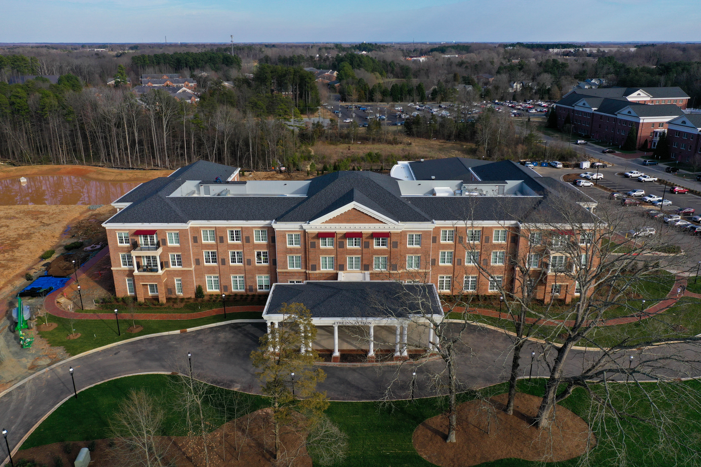

An aerial view of Elon University (left) and downtown Elon (right). The town of Elon depends on sales tax revenue from shops like those in downtown Elon for the town's budget. Town's normally depend on property tax revenue as a dependable stream of funds but the town's largest property owner — Elon University — is tax exempt.
The largest portion of the Town of Elon’s budget comes from sales tax revenue due to the lack of property tax from large non-profits like Elon University and Twin Lakes Retirement Community
A cup of coffee from Oak House. A tank of gas from Circle K. While full- time residents and students
alike use water to take showers and sidewalks to cross town, the sales tax from shopping locally is largely where students’ financial support ends.
While most municipalities fund their operations with a healthy mixture of sales taxes and property taxes, college towns such as the
Town of Elon often must rely much more heavily on sales tax revenue since their largest property owner — the university — is tax exempt.
“There’s pros and cons with the higher reliance on sales tax. If your economy goes down, sales go down, you can be in a crunch, whereas with property tax, that’s pretty consistent year to year,” Town Manager Richard Roedner said.
That was the fear when the town of Elon created its budget for the 2020-21 fiscal year with the expectation that sales tax revenue would be down because of the coronavirus pandemic. To the town’s surprise, sales tax revenue wasn’t down, actually coming in at $700,000, or about 25%, above expectations. But that doesn’t stop the town’s dependence on sales tax as a major source of revenue.
That’s one of the reasons why towns depend on people shopping locally.
“You’re supporting a local business owner who also probably contributes in some way to the university, to our local community, but then also supporting our local sales tax versus another town’s sales tax as well,” Alderwoman Emily Sharpe said.
Getting coffee at Oak House, dinner at Tangent Eat+Bar and drinks at MaGerk’s supports not only these businesses but also the revenue infrastructure for the town.
If people don’t shop locally in the town of Elon, this could put businesses in jeopardy, and the town could lose sales tax revenue — a generous source of profit for the town. If a business has to close, the town could then lose property taxes as well.
“If that money is going elsewhere or not being collected because the businesses are vacant, it gets harder and harder to meet those services without raising taxes,” Roedner said. “If you want something new, you got to pay for it, and that’s the tax product part of it. And if you don’t have those businesses and that economy to support your tax base, it gets very hard to provide services that people want, new services that people are looking for.”
Roedner is unsure why the town saw an increase in sales tax revenue, but he suspects it’s because the town receives a small portion of sales tax from online purchases made by residents in the town. And although the largest stream of revenue for the town comes from sales, Aldermen and Mayor Pro Tem Davis Montgomery said this isn’t a dependable source of revenue for the town, unlike property taxes.
“The sales tax, while it’s there, and you can historically say it’s been within a certain range, there’s no guarantee that’s going to happen. The property taxes and vehicle taxes, they’re a little more stable,” Montgomery said. “We we’re pleasantly surprised this last year. So many people started shopping on Amazon that sales tax went up.”
For most cities, property tax is the largest source of revenue and a source to lean on during the pandemic, but for college towns, the tax-exempt status of universities limits the amount of property taxes the town collects.
In the early months of the pandemic, Steve Patterson, then-vice chair of the National League of Cities’ University Communities Council and mayor of Athens, Ohio, which is home to Ohio University, said there were concerns about the loss of revenue due to students leaving.
“Loss of population means loss of revenue. Residents are struggling to pay water bills,but we still need to maintain the system. The retail sector was in large part built around catering to a student population,” Patterson said at a July briefing.
Non-profit entities like Elon University are tax-exempt, meaning the university does not have to pay property taxes on the 482.905 acres of its tax-exempt land. The tax value of Elon University’s exempt land, as of 2017, is worth $285,396,239.
100 Campus Drive has the highest property tax value in the town.
It's tax value is $79,206,946.
An aerial view of Elon University at 100 Campus Drive. Clare Grant | Elon News Network
Although the university has tax-exempt status, it still uses services provided by the town, which cost money to run. The fire department responding to alarms going off in a dorm, town police being dispatched to an apartment and even the water running through faucets on campus all are services at the expense of the town.
“When we talk budgets, what we’re really talking about is services, meeting the service needs that the community has identified,” Roedner said. “We want nice parks. We want nice roads. We want water to flow.”
To address town services that the university utilizes, Elon donates money to the town annually which goes toward the downtown fund and fire and police departments. Between 2015 and 2020, the university donated $643,087, according to records from the town. But by the town’s estimates, that amount pales in comparison to the costs associated with providing services to the university.
Based on the number of calls made to Elon University, the town has estimated that for the 2020-21 fiscal year alone, the university’s share of the $2,403,350 fire budget is $480,670, and its share of the $2,149,842 police budget is $537,460.
The university recently proposed a yearly contribution of $14,000 to the police department and $80,000 to the fire department, with those amounts increasing 2% each year over the next decade. The university has also pledged to give $7,500 to the town’s general fund, which would also be subject to a 2% annual increase. All told, over the next decade, the university has pledged to give $1,237,724 to the town.
Susan Kirkland, associate vice president for business and finance at the university, did not respond to Elon News Network’s multiple requests for an interview regarding the university’s financial relationship with the town. A university spokesman would only answer questions via email on Kirkland’s behalf, stating, “It makes the most sense for the university to provide written responses,” given the information being asked about.
According to a spokesman, the base contribution, which increases each year, was decided through discussions with the town and reflects the growth of enrollment and facility spaces. The university also donates more money to the fire department than the police because the university doesn’t have its own fire services but does have its own campus safety and police.
The contributions to the town come out of the university’s operating budget, which consists of tuition and investment returns from the endowment, according to a university spokesman. These payments to the town are a fixed cost for the university and were not affected by the 5% budget reduction implemented because of the COVID-19 pandemic.
Elon University is not the only tax- exempt property in the town. Churches and the Twin Lakes Retirement Community are also exempt entities. Twin Lakes donates annually to the town’s fire department and has donated a total of $238,358.75 over the past five years. There are a total of 126 tax-exempt properties, excluding those partially exempt, in the town’s jurisdiction.
But the university owns the largest acreage and highest valued property in the town, according to records from the county tax department.
Jeff Stein, vice president for strategic initiatives and planning, said the university recognizes the financial position the town is in with the presence of the university and other tax-exempt entities within the town.
“For the town, it can be challenging because they’ve got these very two very large entities — Twin Lakes and Elon University — that are both nonprofits, tax-exempt 501(c)3’s yet, we each use resources, right?” Stein said. “So that’s why the university is very proactive, let’s say, on making sure that we’re supporting the fire department, the police and other initiatives that the town needs support on.”
Town-gown financial relationship
With the university continuing to expand, the town services needed by the university will only grow. Alderman Monti Allison said he would like the university to recognize the funds needed for the town to provide services to the university.
“They depend on us to provide water and sewer and other services. So when we look at that, we realize, ‘So how do we cover that?’” Allison said. “If you look at property tax, the university basically represents about a quarter of the land mass of our town, and because of the tax-exempt status, that property is not taxable. And that’s something we understand. ... What concerns us, I guess, as the university continues to grow and acquire property that only further reduces our tax base.”
With the building of the university’s innovation quad, a part of ELon's strategic plan, on the old Elon Elementary lot, the town has assessed that a new water line will need to be put down to better serve the capacity of water that the university would require. According to Roedner, the town has not confirmed the need for a new water line with the university, but the type of water line is dependent upon what the layout of the buildings are — something the town doesn’t know yet.
“But, since we know the line is old, not sized for current standards (6” versus 8”), and assuming we will have to increase it to meet the University’s needs (up to 12”), we are planning ahead to replace/upgrade that line so that it is ready when the University is ready for construction,” Roedner wrote in an email to Elon News Network.
According to Roedner, an estimated cost for the upgrade would be $3 million. This would eat away at a majority of the town’s revenue for one fiscal year and is equivalent to the amount of sales tax the town generated in 2019-20. The town is currently discussing with the university how they could share this cost, Roedner said, and the town is looking into grants for the water line project, according to multiple aldermen.
For Montgomery, it’s important for the town to communicate with the university on what it needs to provide services, like the water line, that are mainly used by the school.
“It looks like the main beneficiary is going to be possibly university properties, but yet the town and the towns, people will be paying the taxes or the payments on that project,” Montgomery said. “So when that has happened in the past, we’ve talked with the university, we’ve sat down and, whether it’s a sidewalk or whether it’s a water line or whatever it is, it looks like the situation may be such that you’re benefiting from this as well, and would you be willing to participate?”
Stein said the university has discussions with town on how to support each other’s goals, including strategic initiatives and the master plans of both the town and university. While the current strategic plan, Boldy Elon, has no town officials on the committee and only mentions the town in terms of creating a “vibrant college town,” Stein said these discussions are ongoing.
“Although we talked with the town about Boldly Elon, we realized that we need the town to have a conversation with the university and the university have a conversation with the town board about each other’s strategic plans,” Stein said.
Stein said both the town and university recognized the need to strengthen communication this past fall and have restructured what that looks like. He said changes in leadership at the university,such as President Connie Book and a new chief financial officer, and in the town, like the recently elected aldermen, require new relationship building. On top of new leadership, he said the pandemic and the new strategic plan happening at the same time was cause for reestablishing the town- gown relationship.
“We’ve had a lot of transitions. So President Book is still somewhat new, we’ve got a new town manager, there are new members of the town board and then there were new senior staff members who were involved in working with the town,” Stein said. “And so we realized this fall that we needed to be talking with each other more and that we had to catch up because we were all new at this relationship.”
Allison said communication with members of the university’s senior staff has helped the town know what services it needs to provide Elon and what the town needs from the university.
“We know the university has a plan, and up until the last couple of years, we never really were a part of that. So that if their 10-year plan was to grow the student body population by 2,000 students, that places some requirements back on us from an infrastructure standpoint,” Allison said. “So I think we’re starting to realize, and I’ve told people this, the university needs the town and likewise, the town needs the university.”
"Everyone really stays siloed. The university stays at the university, Twin Lakes stays at Twin Lakes, our residents kind of stick to their own areas.But finding more ways to bring us all together like that downtown green space, like more sidewalks, I just think that it’s just going to help us to build that sense of community that I think a lot of people are really still looking for."
Emily Sharpe
Town of Elon Alderwoman
Although the university is not required to donate money, Sharpe said the town appreciates any amount of financial contributions it can get, and everyone could benefit from more funding.
“One of the things that we hear most often from our residents is the desire for more sidewalks, and everyone could benefit from that — the students, the staff, the full-time residents here in the town — but the town doesn’t have the money to do that,” Sharpe said. “So I think about all of these different areas that if the university were to provide a substantial amount of money to the town that could be budgeted and accounted for every single year, that it just helps the town to plan for those types of projects that really do benefit everyone.”
Sharpe said if the town were to receive more money from the university, or if it donated money to special projects, it would free up the budget to do more projects that would be beneficial to both the town and university residents. Sharpe said she would love to see the university either create a downtown park or greenspace with the property it owns downtown or give some of that land to the town to use.
“Everyone really stays siloed. The university stays at the university, Twin Lakes stays at Twin Lakes, our residents kind of stick to their own areas,” Sharpe said. “But finding more ways to bring us all together like that downtown green space, like more sidewalks, I just think that it’s just going to help us to build that sense of community that I think a lot of people are really still looking for.”
Downtown development is a part of the university’s 2016 Master Plan. A “near-term” project — to be completed in five to eight years — for the university is to use the land behind Park Place for a park that would feature “programs and amenities to serve students and residents alike.”
Stein points to the Inn at Elon as a project mutually beneficial to the university and town. All profits made from the Inn at Elon, outside of operating costs, go toward scholarships at the university, but the hotel, which is not on tax-exempt land, pays property taxes that benefit the town and directs people to shop in downtown Elon.
The property owned by the university at 605 O’Kelly Avenue, where the Inn at Elon is located, has a tax value of $26,335,849, according to documents from the county tax department. The hotel paid $118,000 in property taxes in 2020, according to a university spokesman.

605 O'Kelly Avenue is where the Inn at Elon is.
The inn isn't tax-exempt
It's tax value is $26,225,849.
An aerial view of the Inn at Elon at 605 O'Kelly Avenue. Clare Grant | Elon News Network
But as the university and the town look at future projects, Montgomery said it’s important for the town to have a dependable stream of revenue.
“If you look at the town, for us, having a dependable revenue stream is more important to us than having an occasional here today, gone tomorrow sort of situation,” Montgomery said. “So if the state code were to change and every nonprofit would have to pay at least some percentage of property taxes, then at least that’s a guaranteed revenue stream that we know is coming in year after year after year.”
Sharpe wants the town and university not only to work together financially but also build community. Sharpe said recognizing that the town is a communal space for residents and students to use is something she wants both parties to realize. She recently led a community clean up to collect litter around town with members of the Student Government Association after a town resident brought up litter in his neighborhood at a recent town meeting.
“I just want for people to understand that we are all in this Elon community together,” Sharpe said. “I think that a lot of times people only associate the name Elon with the university or the name Elon with the town, but we really are one community.”